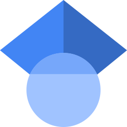

Journal Publications 
Write to prince.gollapalli@gmail.com if you want a pdf of the papers.
- Theoretical understanding of water splitting by analyzing nanocatalyst photoabsorption spectra
Prince Gollapalli and Maytal Caspary Toroker
Nanophotonics | vol. 14, no. 2, pp. 153-167, 2025 | DOI
- Accelerating defect predictions in semiconductors using graph neural networks
Md Habibur Rahman, Prince Gollapalli, Panayotis Manganaris, Satyesh Kumar Yadav, Ghanshyam Pilania, Brian DeCost, Kamal Choudhary, Arun Mannodi-Kanakkithodi
APL Machine Learning | vol. 2, no.1, p. 016122, 2024 | DOI
- Role of electronic binding energy on the stability of B, C, N, and O in Fe
P.S.V.R.A. Kishor, Prince Gollapalli, Debolina Misra, Prajeet Oza, Satyesh Kumar Yadav
Physica B: Condensed Matter | vol. 668, p. 415264, 2023 | DOI
- Predicting formation of chemically graded metal/ceramic interfaces
Prince Gollapalli, PSVRA Kishor, and Satyesh Kumar Yadav
Computational Materials Science | vol. 224, p. 112155, 2023 | DOI
- Atomically chemically graded Ti/TiN interface
Prince Gollapalli, J Varalakshmi, PSVRA Kishor, Prajeet Oza, and Satyesh Kumar Yadav
Applied Surface Science | vol. 597, p. 153637, 2022 | DOI
- Annealing-induced changes in optoelectronic properties of sputtered copper oxide films
Aarju Mathew Koshy, A. Sudha, Prince Gollapalli, Satyesh Kumar Yadav, and Parasuraman Swaminathan
Journal of Materials Science: Materials in Electronics | vol. 33, p. 13539, 2022 | DOI
- A Computational study on boron dipyromethene ancillary acceptor-based dyes for dye-sensitized solar cells
Ganapathi Rao Kandregula, Sudip Mandal, Gollapalli Prince, Satyesh Kumar Yadav, and Kothandaraman Ramanujam
New Journal of Chemistry | vol. 44, no. 12, p. 4877, 2020 | DOI